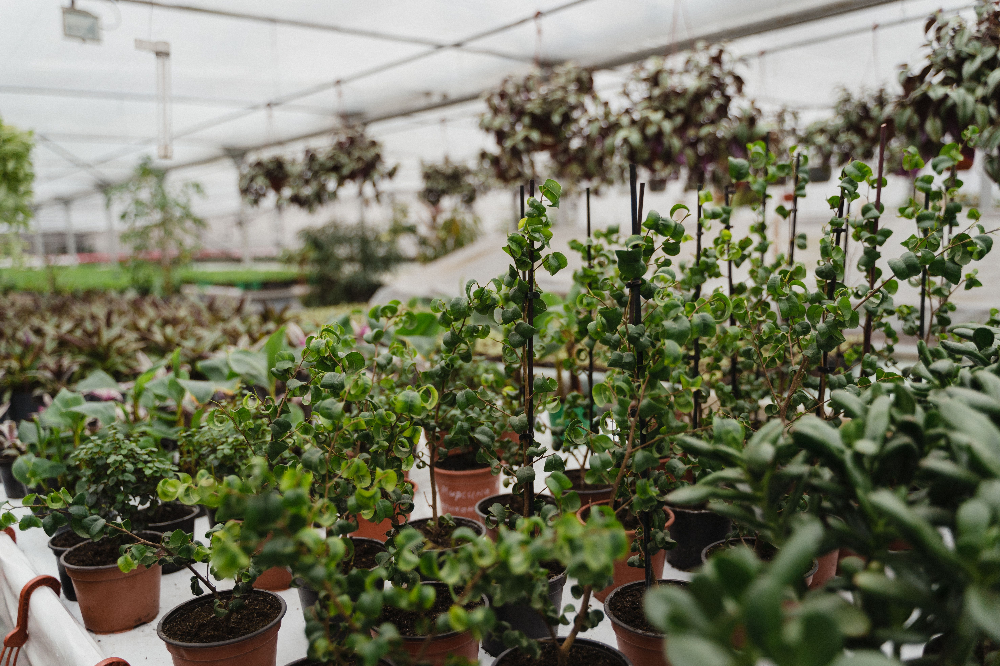

Flat-Top & Cable Shade Houses
Cost-effective, large-acreage structures utilizing modular cable systems and reinforced galvanized posts for nursery stock and hardy crops.
High Coverage Area

Engineered specifically for harsh GCC climates. Built with high-strength galvanized steel, UV-stabilized shade fabrics, and impact-resistant fiberglass panels designed to optimize light diffusion and withstand extreme heat.
High-Performance Shade & Rigid Protection
Engineered specifically to resist intense solar radiation, high ambient temperatures, and abrasive sandstorms. Combine breathable mesh shading or impact-resistant fiberglass panels with hot-dip galvanized steel framing.
Our UV-stabilized shade nets diffuse direct sunlight to eliminate leaf-scorch, while heavy-duty corrugated fiberglass panels deliver high light transmission paired with unmatched structural rigidity against high winds.
Cost-effective, large-acreage structures utilizing modular cable systems and reinforced galvanized posts for nursery stock and hardy crops.
Curved roof design optimized for aerodynamic wind shed and superior internal height clearance for taller fruit and vegetable crops.
Heavy-duty corrugated fiberglass walls and roofs offering high shatter resistance, thermal insulation, and uniform light scattering.
Retractable internal or external shade-net systems combined with clear poly or fiberglass for flexible seasonal light management.
Ultra-rugged, impact-resistant cladding solutions engineered for long-term harsh desert conditions.
Non-corrosive glass-reinforced polyester panels built to withstand abrasive sandstorms and high salinity environments.
High-performance light diffusion eliminates harsh direct sun scorch, ensuring uniform photosynthetically active radiation (PAR).
Corrugated profiles offer exceptional load-bearing strength against high wind shear and physical impacts.
Protected with an external anti-UV gel-coat layer preventing resin degradation and yellowing over a 10 to 12+ year lifespan.
Platform Comparison
Directly compare technical features to determine the right infrastructure for your local environment.
| Key Parameter | Shade Net System | Fiberglass (GRP) System |
|---|---|---|
| Primary Function | Maximum airflow & solar heat reduction | Structural impact protection & light diffusion |
| Optimal Environment | Hot, arid climates requiring rapid heat dissipation | High-wind, sandstorm, or severe coastal zones |
| Material Specification | Knitted UV-stabilized High-Density Polyethylene (HDPE) | Heavy-duty corrugated Glass Reinforced Polyester (GRP) |
| Shade / Light Control | 30% to 80% customizable shade factors | High light diffusion (prevents crop burn) |
| CAPEX Investment | Lower initial cost / High ROI for large acreage | Moderate-to-high initial investment / Long lifespan |
| Actions | View Shade Net Specs → | View Fiberglass Specs → |
Unsure which system fits your site?
We offer hybrid structures combining GRP side walls with retrievable shade net roofs.
Every structure is designed, fabricated, integrated, and commissioned entirely in-house.
Precision steel cutting, welding, and hot-dip galvanising handled direct at Our manufactuirng plant.
Custom-engineered structural tolerances built specifically for extreme regional winds, solar radiation, and sandstorms.
Seamless integration with world-class Priva & Hoogendoorn environmental control algorithms.
Full structural assembly, sensor calibration, and comprehensive dry-run commissioning before handout.
Questions
Corrugated Fiberglass (GRP) cladding is engineered specifically for harsh, abrasive environments. Unlike standard poly films, GRP panels resist sand-scouring, high wind shear, and impact without tearing. They offer a 15+ year operational lifespan with minimal degradation.
We offer UV-stabilized HDPE knitted shade nets ranging from 30% to 80% density. High-light crops (like tomatoes) typically utilize 30%–50% shade factor, while leafy greens, nurseries, and extreme heat regions require 60%–80% shade factor to prevent solar radiation burn and lower ambient temperature.
Fiberglass panels scatter incoming sunlight to create high light diffusion, preventing direct hot-spots and encouraging deeper canopy penetration. Shade nets physically block a chosen percentage of direct PAR light and thermal radiation while allowing maximum natural air ventilation through the open-weave structure.
Yes. Many commercial operations deploy robust GRP side cladding to protect against perimeter wind and sand impact, combined with automated interior or roof shade nets to dynamically manage light levels and heat buildup throughout the day.
Shade Net structures carry a lower initial CAPEX and shorter setup lead times, making them highly cost-effective for large-acreage cooling. Fiberglass structures represent a higher upfront investment but deliver long-term protection against extreme physical weather, lower maintenance overhead, and multi-season durability.